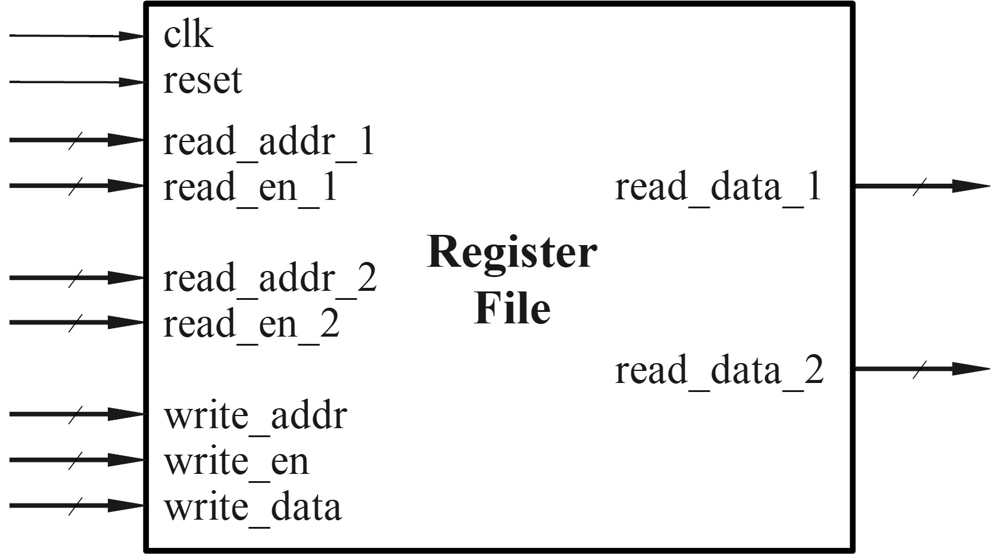
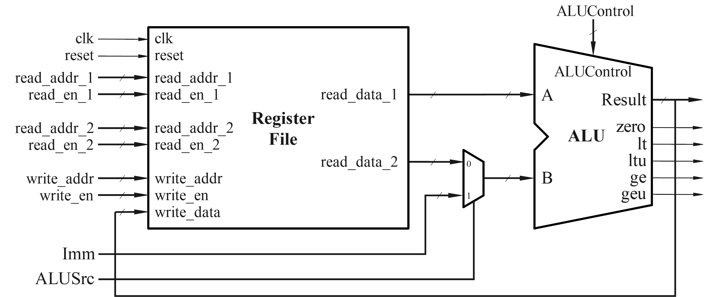

实验四 算术逻辑单元 ALU 与寄存器堆设计
本实验中，我们将完成算术逻辑单元 (ALU) 和寄存器堆 (register file) 的设计与仿真，为后续的处理器设计奠定基础。
1. 电路模块功能描述
ALU 功能描述
我们要设计一个算术逻辑单元 (ALU)，输入输出如图所示：

A 和 B 是两个 32 位的输入操作数，Result 是 32 位的运算结果。具体做什么运算由 6 位的 ALUControl 决定，如表格所示：

此外，ALU 还需要对比两个输入操作数的数值大小，并输出相应的标志位，具体如下表：

寄存器堆功能描述
本实验中，ALU 的操作数可以来自寄存器，也可以是立即数，因此需要设计寄存器堆 (Register file)。功能如下：
寄存器堆中包含 32 个 32 位的寄存器，分别编址为 0 号 ~ 31 号；
寄存器堆包含两路读出通路和一路写入通路，每一路都有使能信号、地址信号、数据信号。
读出操作 不受
clk控制，只要读出使能信号read_en为 1，就将地址为read_addr的寄存器中的数据读出到数据输出端read_data；写入操作 受
clk控制，在时钟沿来临并且写入使能信号write_en为 1 时，将待写入的数据write_data写入地址为write_addr的寄存器中；
reset信号可以将所有寄存器写为全零；第 0 号寄存器恒为全零。


Top 模块
本实验中，我们将寄存器堆与 ALU 连接起来，使得寄存器堆为 ALU 提供输入，如图。
ALU 的第一个操作数来自寄存器堆，第二个操作数可能来自寄存器堆或者是一个立即数 Imm ，选哪一路取决于 ALUSrc 的控制。

2. 实验内容
ALU 设计
加、减、与、或、异或、移位操作的 verilog 实现比较简单，这里着重讨论如何基于减法的结果完成两个操作数的大小值判断。
减法运算在硬件上是可以基于加法运算实现的，如图。我们可以根据减法的结果以及两个输入操作数的最高位，来判断数值大小。

必做内容1：证明数值大小的判断逻辑
已知输入操作数 A、B、减法运算的输出进位 cout，判断 A < B 的逻辑为：
对于无符号数，当
cout = 0时，A < B;对于有符号数，当
A[31] ^ B[31] ^ cout = 0时，A < B;
请证明以上逻辑是正确的。
必做内容2：ALU Verilog 代码设计
根据功能描述完成 ALU verilog 代码的设计。注意 A >= B 的逻辑可以由 A < B 的逻辑取反推出。
下列代码中使用了一些宏定义，这些宏定义在 define.v (点击下载) 中定义，下载并添加到你的 project 中。宏定义可以将数据位宽、地址位宽、使能信号的高低等信息单独定义，使得可以在不修改主要源代码的情况下更方便地修改设计，例如将 32 位 ALU 的设计扩展位 64 位。
1`include "define.v"
2
3module ALU(
4 input wire [`ALU_DATA_BW] input_A
5 ,input wire [`ALU_DATA_BW] input_B
6 ,input wire [5:0] ALUctrl
7
8 ,output reg [`ALU_DATA_BW] result
9 ,output wire zero
10 ,output wire lt
11 ,output wire ltu
12 ,output wire ge
13 ,output wire geu
14 );
15
16 wire c_out;
17
18 // Your codes should start from here.
19 // ......
20 // End of your codes.
21
22endmodule
1Macros in define.v:
2
3`define RST_EN 1'b1
4`define ZERO32 32'h00000000
5
6`define ALU_DATA_BW 31:0
7`define IMM_BW 31:0
8
9`define REG_ADDR_BW 4:0
10`define REG_BW 31:0
寄存器堆设计
必做内容3：寄存器堆 verilog 代码设计
根据功能描述完成寄存器堆的代码设计。regs 为 [0:31] 共 32 个寄存器组成的数组，每个寄存器有 [31:0] 位。
1`include "define.v"
2
3module regfile (
4 input wire clk
5 ,input wire rst
6
7 ,input wire [`REG_ADDR_BW] write_addr
8 ,input wire [`REG_BW] write_data
9 ,input wire wen
10
11 ,input wire [`REG_ADDR_BW] read_addr1
12 ,output wire [`REG_BW] read_data1
13 ,input wire read_en1
14
15 ,input wire [`REG_ADDR_BW] read_addr2
16 ,output wire [`REG_BW] read_data2
17 ,input wire read_en2
18);
19
20 reg [31:0] regs [0:31];
21
22 // Your codes should start from here.
23 // ......
24 // End of your codes.
25
26endmodule
Top 模块仿真
必做内容4：Top 模块 testbench 仿真
新建 Top module，将寄存器堆和 ALU 连接起来。
这里提供仿真所需的文件供下载：tb_ALU.v (点击下载) 、tb_ALU.v (点击下载)。
其中 .v 文件是预存的运行结果，用作对比的标准。tb.v 是激励文件。
完成 top 模块的测试，并对 “所有 case 通过测试” 的界面进行截图。
3. 报告提交
本次实验需要提交：
实验报告：
下载实验报告模板
.v文件压缩包：只设计文件，无需仿真文件
两项一同扫码提交（支持从微信聊天记录上传）。
Deadline ：2026-11-01 23:59:59 。